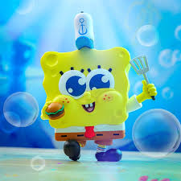
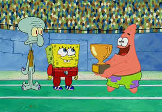
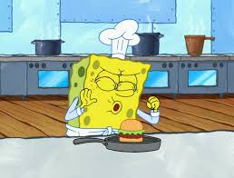
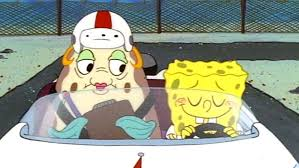

SpongeBob SquarePants fanpage :>
“I'm ready! I'm ready! I'm ready!” - SpongeBob SquarePants.

About Spongebob
SpongeBob is a yellow sponge character that lives in a pinapple house in the city of Bikini Bottom which is under the sea. SpongeBob is a very hardworking person as he is a fry cook in the Bikini bottom in the famous resturant the Krusty krab. SpongeBob Squarepants is known for the child like and joyful character that he is, Spongebobs life is involved in many things such as causing trouble for his neighbor squidward and spending time with his best friend Patrick.

ACHIEVEMENTS
- Krusty Krab Employee of the Month
Throughout SpongeBobs life he has served as an excellent employee at the Krusty Krab where he satisfies customers cravings. SpongeBob Squarepants has an amazing skill set when it comes to cooking and serving for the Krusty Krab. SpongeBob makes such amazing burgers that even a villan named plankten has tried to steal the secret recipe. Due to SpongeBobs amazing fry cooking skills, he has
recieved employee of the month several times

SpongeBob has been trying to get his boating license for a very long time but has failed the exam multiple times. SpongeBob began taking boating lessons from a puffer fish named Mrs. Puff whom is very strict when teaching. Due to SpongeBob failing the boating exam , Mrs. Puff was put in jail seveal times. After failing the exam multiple times, and many lessons from Mrs. Puff, Spongebob was able to pass the boating exam!

SpongeBob was given this role for his hard work and took his job very seriously. SpongeBob had to save the town from Dead Eye Plankton who was trying to take over the town. SpongeBob did his hardest work and ended up saving Bikini Bottom and earned a medal and his title of sheriff. SpongeBob Squarepants shows how he is a very hardworking person and will do anything to help his friends and the community (bikini bottom).

More Resources on SpongeBob SquarePants:
Sad SpongeBob video
SpongeBob Facebook Page!
SpongeBob Descriptions